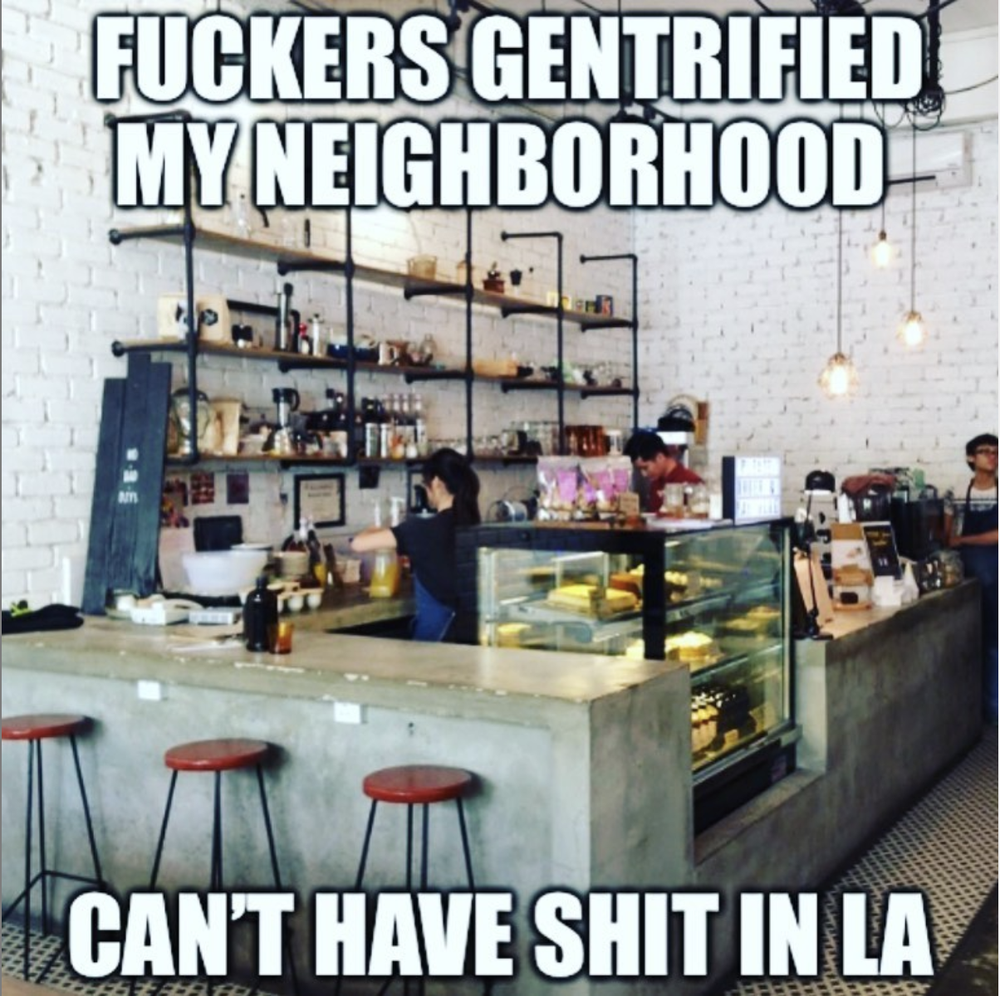
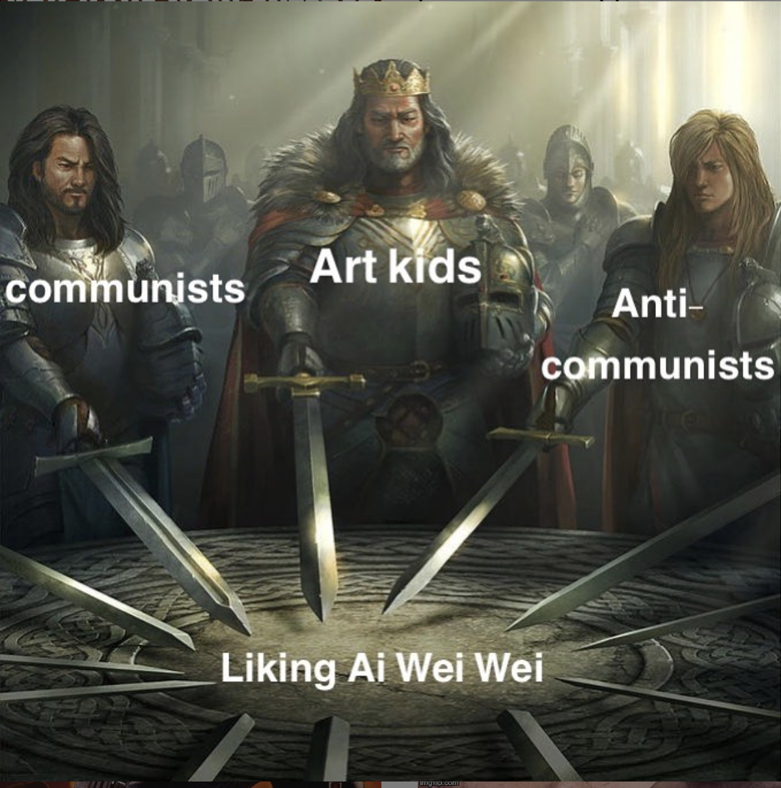
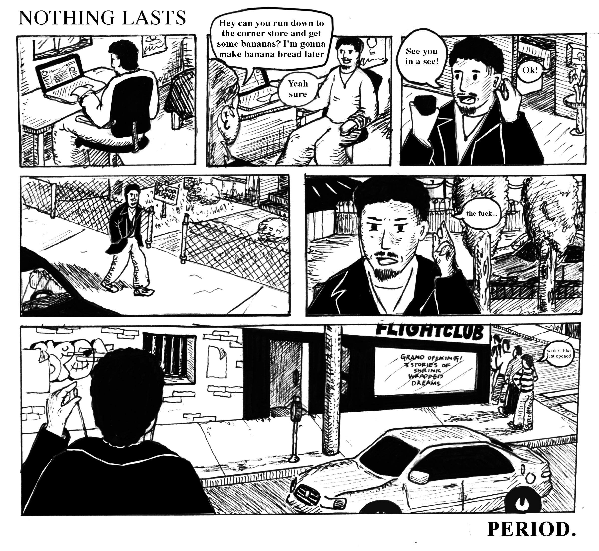
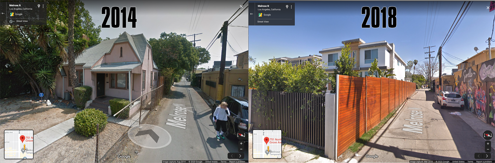
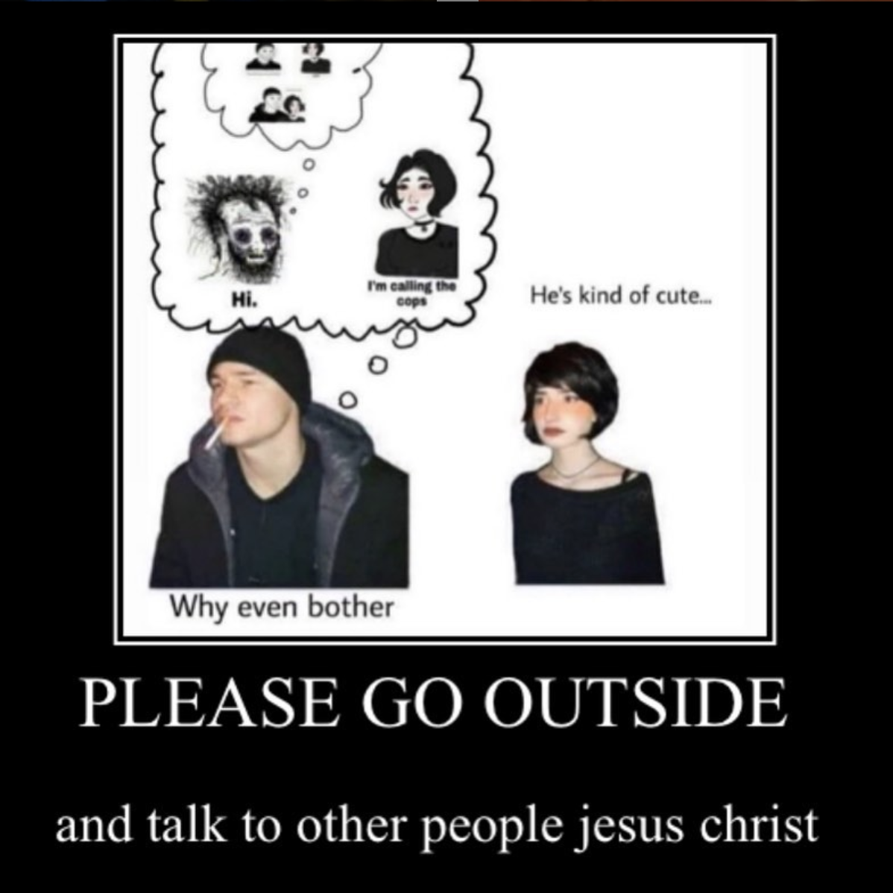

“WHY DID YOU MAKE BENCHPRESSTHEINTERNET”?
I made it not because I wanted to, but because everyone told me to. I used to just make memes and I would post them on my story on the main account and everyone got like, tired of that and was like “bro just make a meme account” and i was like “shit, alright” so i made a meme account and then it kinda backfired cause i started reposting other people's memes at twice the normal rate on my regular account but ya know, people who liked the original content from the get-go could all follow the meme account. It was all just Demand.

“WHAT INSPIRES YOUR CONTENT? IS THERE ANY DRIVING INSPIRATION? A CRITIQUE OF CAPITALISM SEEMS TO BE A DRIVING THEME ON YOUR PAGE, BUT WHAT INSPIRES YOU?”
What a lot of the stuff on the page is, i kinda just go through various stages of hyperfixation on a number of topics, adn because ive been doing it so long, ive pretty much just trained my mind to process certain thoughts and feelings in the form of like, goofy pictures and cultural references, at this point its like a reflex more than anything else, its just like how im infodumping. I’ll like, read a fuckton of wikipedia about some anti-capitalist theory, or get really into the lore of a videogame, and that's just like how i work through it. It's like the whole thing if you can teach it, you know it really well, i would say making jokes is when you really know it. If you can make it funny, that's how you really know you know your shit inside out.
“If you can teach it you know it, if you can meme it”
"YOU REALLY KNOW IT”
“IT SOUNDS LIKE MEMES ARE A CATHARSIS... THERAPEUTIC”
Yeah, it used to be a lot more so, but nowadays, i'm not like working through deep seeded emotional issues, i have a therapist for that i'm just trying to like, process whatever information i have. A lot of the stuff is like, not anything that anyone i talk to on a regular basis is interested in, so if my friend is like go watch a movie, i'll watch it and call them to talk about it, but if i go on a wikipedia sesh, no one wants to hear about that shit but if i put it out there on the internet, someone will find it. Hopefully. Shout it into the void and all that.

“WHAT IS THE BEST PART ABOUT LIVING ON FAIRFAX”
The best part is that you get to be in-tuned with Rage. and the emotion of Anger because you are faced with a lot of like, unbelievable shit in terms of like, late-stage capitalist gentrification shit that you see all the time, and that i've been seeing my whole life, happening in real time. And the people are like...bro before quarentine id be walking down there and just be shoulder-checking fuckin like 13 year olds. It's kinda fucked up, but these kids would have like, head to toe like raf simons, just like. Dude. I don't even want to talk about it. My blood pressure just like, spiked.
“WHAT'S THE WORST PART ABOUT LIVING ON FAIRFAX?”
Well this isn’t exclusive to fairfax, but I would have to say the loss of community, which is just something that happens anytime there is gentrification, but when everyone living around you gets bought out, and you don't know anyone who lives around you and all of the prices of everything that you’d be buying around you outclasses you so you cant even shop locally, and everything on a daily basis has to become outsourced, not everything, but you know the community ceases to exist. Especially in Fairfax because it's like the epicenter of “the culture” so everyone is really hyped on getting the supreme drop, and no ones talking to each other.
“I MEAN YEAH, THE ENTIRE CULTURE IS LIKE, BASED OFF OF COMMODITY FETISHISM"
Yeah everything is based off of commodity fetishism and no actual connection, if i had to summarize it that would be the biggest problem.
“ITS GOTTA BE HARD CAUSE ITS LIKE, YOU KNOW THAT STUFF ISNT GONNA LAST FOREVER.”
That’s the thing man, nothing lasts, like… Nothing Lasts. Period. That was a crazy experience that i had a few years ago. My mom needed something like bananas for baking and she asked me “can you run down to the local grocery store and go pick up some bananas” and i was like “okay” and it was a shoestore. *laughs* even though it was there a week before

“IS THAT THE GIANT SHOEPALACE?”
Nah I think it was where one of the, you know how FLIGHTCLUB has like, 3 different storefronts? I think it was one of them.
“THATS CRAZY”
Yeah that was a real formative experience for me. It was like, where am i , it was totally disorienting and everything is like that. Because when you don't have to build the building physically, businesses can just come and go in the blink of an eye, so there's just nothing. What I think of as my home of Fairfax is long gone, there's not even the consistency in the new Fairfax because everything gets flipped around on like a monthly basis.
“HOW BOUGHT-OUT IS YOUR NEIGHBORHOOD? LIKE ARE YOUR NEIGHBORS INFLUENCERS?”
Yeah so you’ve been to my house and you can see it. The end of the block, the one that borders on Melrose that borders has the pink shit, SORELLO, and from there it spread like cancer. First there was SORELLO, and then there was that one McMansion (you know the big supermodern house), and then the house next to it, demolished, next one went up, and the one right next to that used to be a meth lab when i was a kid, so that one has continued to be like, SOMETHING sketchy, i think now its like an off-the-books elder care place or some shit now, but that one is probably gonna go next i mean you can physically see it creeping up the block. The neighbors are like, i didnt know them much to begin with because of the xenophobic nature of this household ((((his parents are paranoid jewish boomers)))) you know we’d at least wave to them from across the street, and a lot of them were really old, and the ones that didn’t get priced out immediately just like, died.
“I READ THIS THING ABOUT DEVELOPERS BUYING UP SPACES WITH MULTIFAMILY UNITS AND BUILDING MCMANSIONS”

The thing with the McMansions is like, (at least one of the ones on my block the case is this, and definitely others around here), but what they’ll do is this: Those are sitting empty 90% of the time and they’re used as party venues. Like the owners will rent them out by the day to influencers, and they’ll come in and throw like a fuckin, crazy rager, and the owner will have a cleaning crew come in after and then they flip it the next night to a differnet person, so a lot of these crazy modern houses aren’t even lived in most of the time. They’re just sitting there waiting for the next fuckin rager, and thats how they make a return on investment from the multifamily zoning shit, just night by night.
“I STILL CANT GET OVER THE GROCERY STORE GETTING TURNED INTO FLIGHT CLUB. THE JUXTAPOSITION BETWEEN USE VALUE AND EXCHANGE VALUE OF FLIGHT CLUB VERSUS YOUR NEIGHBORHOOD GROCERY STORE, YA KNOW OFF-WHITE JORDAN ONES COSTING LIKE $2000 COMPARED TO NOT BEING ABLE TO BUY BANANAS FOR STACY’S BANANA BREAD”
Yeah I mean you asked me what the memes were based on, i mean We In This Bitch bro. I’m just thankful that my parents got a mortgage on this house when there was a methlab down the street, ya know if we were renting, we’d be fucked. I mean completely obliterated. Instead we’re just endebted to the bank forever but, ya know, it is what it is.
“THIS CONVERSATION ABOUT A MEME ACCOUNT IS ACTUALLY A CONVERSATION ABOUT LATE CAPITALISM”
“Oh you thought this was about memes?”
ANYWAYS, WHAT ARE YOUR FAVORITE MEMES YOU'VE EVER POSTED?
Im gonna level with you man, i kind of fucking hate memes.Im not sure if you remember when that culture was blowing up, but that was just so, like, symbollic of everything that i didnt want to be associated with for running a meme account. The layers of like, self pity and simulated social interactions that are so off from what anything would be like in real life--like, please just Go walk outside and talk to someone.

Last one i think i gotta do the fuck it tho bro its you life. It says call me when the beatles have contributed half the cultural significance as fuck it tho bro its yo life. That one blew up so i feel like i have to include one that like, did well numbers wise in the top three.
“THE FUNNY PART IS IVE ALREADY PUT THAT VIDEO INTO SOUP”
The thing is like, multiple centuries of philosophers have struggled their entire lives to get half of what that video implies. Like the implications bro, its so truthful. Its such a reflection of the world. If you can find that balance between raise hell and fuck it tho bro its yo life that the mentality goal.